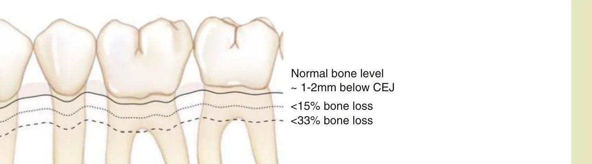

نسخه استخراجشده؛ ترجمه یا تأیید علمی انجام نشده است. وضعیت: captured
استیج با دو گروه معیار تعیین میشود: شدت و پیچیدگی.

| استیج | CAL بیندندانی | تحلیل استخوان | از دست دادن دندان |
|---|---|---|---|
| I | ۱ تا ۲ میلیمتر | کمتر از ۱۵٪ ثلث کرونالی | ندارد |
| II | ۳ تا ۴ میلیمتر | ۱۵ تا ۳۳٪ ثلث کرونالی | ندارد |
| III | ۵ میلیمتر یا بیشتر | تا ثلث میانی یا فراتر | ۴ دندان یا کمتر |
| IV | ۵ میلیمتر یا بیشتر | تا ثلث میانی یا فراتر | ۵ دندان یا بیشتر |
⚠️ نکته کلیدی: اگر بیمار دندانی را بهدلیل پریودنتیت از دست داده باشد، این عامل بهتنهایی میتواند استیج را بالا ببرد — حتی اگر CAL باقیمانده کم باشد.
📌 قانون طلایی: استیج هرگز پایین نمیآید. بیمار استیج III پس از درمان موفق، همچنان استیج III باقی میماند؛ چون استیج بازتاب تخریب تجمعی گذشته است.
پیچیدگی میتواند استیج را بالا ببرد حتی اگر شدت در مرتبه پایینتری باشد.
عمق پروب ۶ میلیمتر یا بیشتر
تحلیل استخوان عمودی ۳ میلیمتر یا بیشتر
درگیری فورکیشن درجه II یا III
نقص ریج با شدت متوسط
همه موارد بالا بهعلاوه:
اختلال عملکرد جویدن
ترومای اکلوزال ثانویه (لقی درجه ۲ یا بیشتر)
نقص شدید ریج
فروریختن بایت، دریفت یا فلرینگ دندانها
باقی ماندن کمتر از ۲۰ دندان یعنی کمتر از ۱۰ جفت دندان مقابل هم
استیج III یعنی «تخریب پیشرفته اما دندانها قابل نگهداریاند». استیج IV یعنی «تخریب بهجایی رسیده که بازسازی کل دهان لازم است» — یعنی مسئله دیگر فقط پریودنتال نیست، بلکه عملکردی و پروتزی هم هست.
موضعی: کمتر از ۳۰ درصد دندانها درگیرند
ژنرالیزه: ۳۰ درصد یا بیشتر
الگوی مولر-ثنایا
CAL بیندندانی بدترین ناحیه را پیدا کن ⬅️ استیج اولیه را تعیین میکند.
تعداد دندانهای از دست رفته بهدلیل پریودنتیت را بشمار ⬅️ میتواند استیج را بالا ببرد.
عوامل پیچیدگی را بررسی کن ⬅️ میتوانند استیج را بالا ببرند.
گستره را مشخص کن.
⚠️ توجه: عوامل پیچیدگی فقط استیج را بالا میبرند، هرگز پایین نمیآورند.
⚠️ اشتباه رایج ۱: معیار اصلی CAL بیندندانی است، نه عمق پاکت و نه CAL باکالی.
⚠️ اشتباه رایج ۲: مرز III و IV از نظر تعداد دندان از دست رفته: ۴ یا کمتر در برابر ۵ یا بیشتر.
⚠️ اشتباه رایج ۳: استیج پس از درمان پایین نمیآید؛ فقط وضعیت به «پایدار» تغییر میکند.